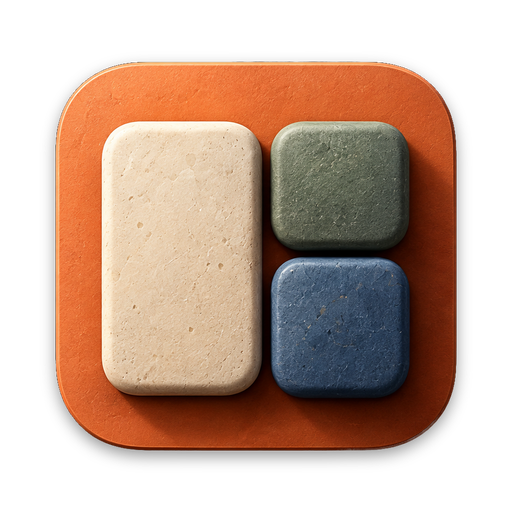
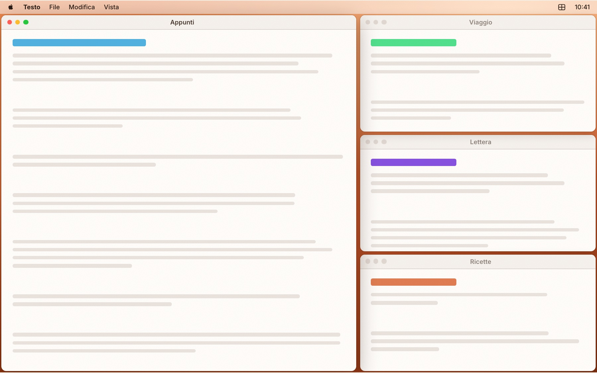
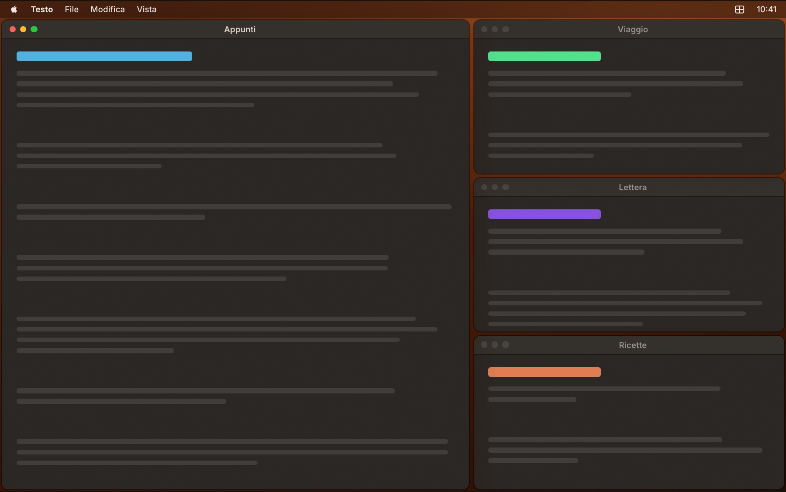
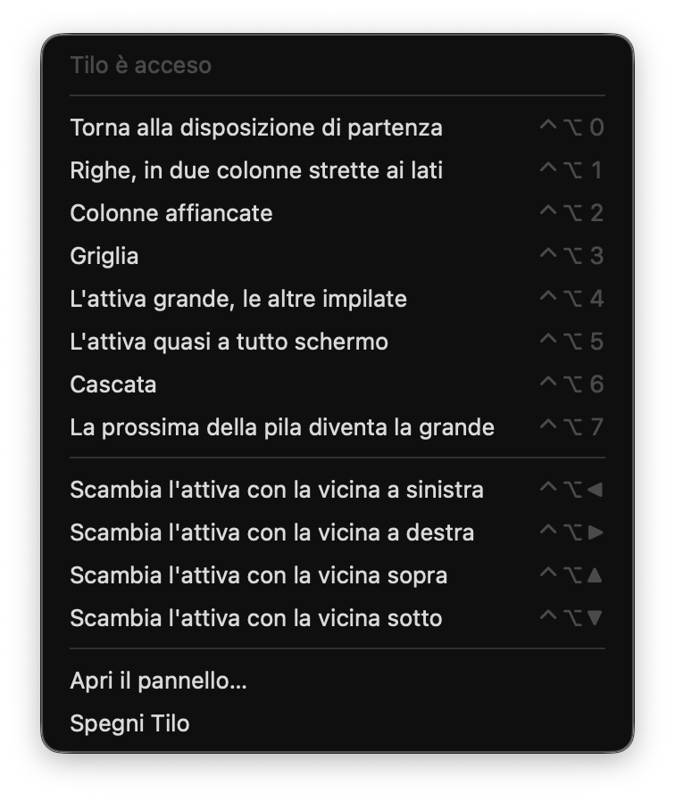
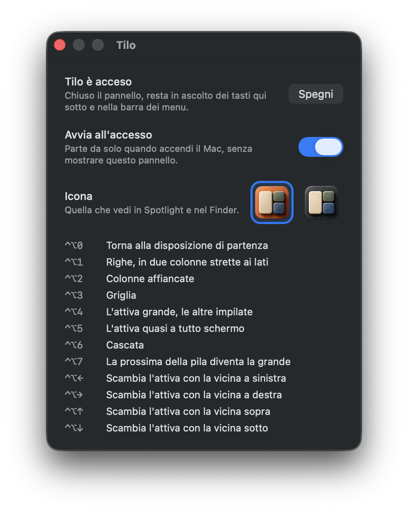

Strumento per Mac · Gratis
Tilo
Le finestre in ordine, con un tasto.
Premi ⌃⌥ e un numero: le finestre del programma che stai usando si affiancano, si mettono in griglia, una grande e le altre in pila. Con ⌃⌥0 tornano dove le avevi lasciate.
Stai visitando da un sistema diverso dal Mac: la versione per Windows è in arrivo.


Cosa fa
Pensato per l’uso di tutti i giorni.
Sette disposizioni
Righe, colonne, griglia, una grande con le altre in pila, focus, cascata. E ⌃⌥7 fa girare le finestre: la prossima della pila diventa la grande.
Solo dove stai lavorando
Dispone le finestre del programma in primo piano, sullo schermo della finestra attiva. Tutto il resto rimane dov’è.
Si torna indietro
Passi da una disposizione all’altra quante volte vuoi: ⌃⌥0 rimette sempre le finestre dove le avevi prima di cominciare.
Scambia con le frecce
⌃⌥ e una freccia: la finestra attiva prende il posto della vicina in quella direzione, e la disposizione resta com’è.
Rispetta il tuo ordine
Righe, colonne e griglia tengono l’ordine che le finestre hanno già. Per cambiarlo trascini una finestra vicino al posto che vuoi e ripremi il numero.
Non si fa notare
Un’icona nella barra dei menu e nient’altro. Parte da solo all’accesso, se vuoi. Lavora offline, nessun dato esce dal tuo Mac.
Provalo qui
Un tasto, e ogni finestra trova posto.
Quattro finestre dello stesso programma, sparse come capita. Premi i tasti qui sotto, o ⌃⌥ e un numero sulla tastiera. Clicca una finestra per renderla attiva, trascinala per la barra del titolo, chiudila col pallino rosso.
Nell’app tutti i tasti si premono insieme a ⌃⌥.
Da vicino
Sempre a portata, mai in mezzo.


Installazione
Un minuto, una volta sola.
Scarica e apri
Apri il file
.dmgscaricato e trascina Tilo nella cartella Applicazioni.Primo avvio
Avvia l’app. macOS avvisa che non può verificarne lo sviluppatore: è normale per il software distribuito fuori dall’App Store senza certificato Apple. Chiudi l’avviso.
Apri comunque
Vai in Impostazioni di Sistema → Privacy e sicurezza, scorri in fondo e premi Apri comunque accanto a Tilo. Da qui in poi si apre come qualsiasi altra app.
Il permesso
Al primo avvio si apre il pannello di Tilo: premi «Dai il permesso di Accessibilità» e accendi Tilo nell’elenco. È il permesso che serve per spostare le finestre degli altri programmi.
Tilo
Le finestre in ordine, con un tasto.